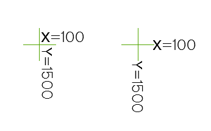

Команда: draw_xy_coor_be_krest_setki
Команда: draw_xy_coor_be_krest_setkiподписывает координаты крестика сетки координат
простая програмка подписывает координаты указанного крестика координатной сетки, координаты округляются до метров, подпись выполняется шрифтом Рубленый широкий (Р-151)
Команда: draw_xy_coor_be_krest_setki
Укажи точку[Настройки]>:
 Указывает точку определения координат или выбирает пункт Настройки
Указывает точку определения координат или выбирает пункт Настройки
Надписи распологаем[Компактно/Широко]<Компактно>::
В зависимости от выбора вставка текстов будет в компактном или широком варианте.
Пример результата работы кнопки в обоих вариантах
